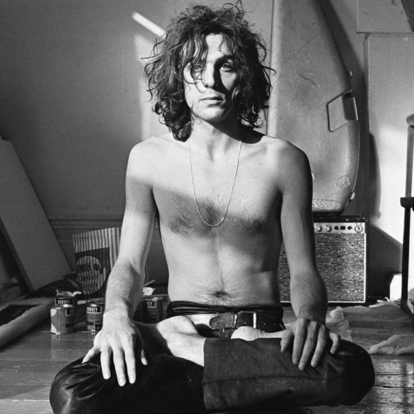
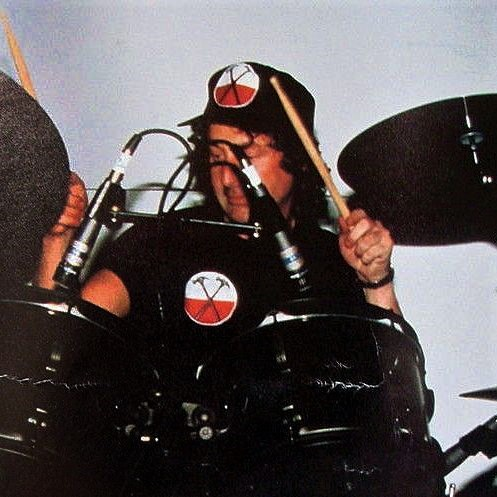

- Members

Syd Barret

David Gilmour

Roger Waters
Richard Wright

Nick Mason
- Studio Albums
The Piper at the Gates of Dawn
(1967)A Saucerful of Secrets
(1968)More
(1969)Ummagumma
(1969)Atom Heart Mother
(1970)Meddle
(1971)Obscured by Clouds
(1972)The Dark Side of the Moon
(1973)Wish You Were Here
(1975)Animals
(1977)The Wall
(1979)The Final Cut
(1983)A Momentary Lapse of Reason
(1987)The Division Bell
(1994)The Endless River
(2014) - Live Albums
Delicate Sound of Thunder
(1988)P.U.L.S.E.
(1994)Is There Anybody Out There? The Wall Live 1980–81
(2000)
- DVD/Blu ray
Live at Pompeii (DVD)
(2002)The Wall - The Movie (DVD)
(2005)P.U.L.S.E. (DVD/Blu ray)
(2006/2019)The Story of Wish You Were Here (DVD/Blu ray)
(2012)The Early Years 1965–1972 (DVD/Blu ray)
(2016)The Later Years 1987-2019 (DVD/Blu ray)
(2019)Delicate Sound of Thunder (Remastered & Remixed) (DVD/Blu ray)
(2020)